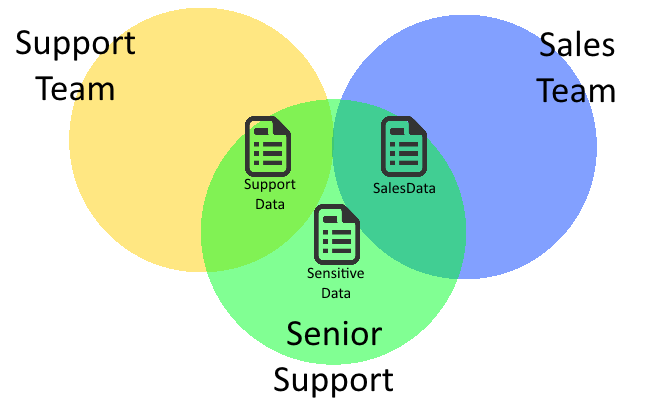

The Logscape Team facility allows you to restrict users visibility to certain data and agents. You may have several reasons for this:
Geography: Ensuring the Asia-Pacific Team aren't monitoring European Servers.
Security: Preventing Front Office Traders from accessing Middle Office Reports.
Simplicity: Ensuring the Application Support Team only see data relevant to their application.
It's recommended that you split your users into teams, both for the benefits listed above and also to improve performance as users are less likely to run searches over irrelevant data.
The primary tool in defining a Team, a Resource Group is a collection of servers. You might wish to group your servers by:
Location or Region: Asia/Europe, Northwest/Southwest, ServerRack1/ServerRack2
Application: Sales/Databases, Docker Boxes, Exchange Servers
Operating System or Architecture: Linux/Windows, x86MachinesOnly, >4 Processors
As the Environment architect, it is up to you to find the best fit for your organisation. For Teams, Location and Application are generally the most commonly used. To learn about creating a resource group, click here.
Once you have defined your resource group, simply add the name to the Team. As soon as it is saved, that Team can only see data received from Hosts within that Resource-Group. This removes their visibility but does not affect the underlying data - so to give the Team access to more servers either amend the Resource Group or remove it altogether.
Resource Groups allow you to limit a user to viewing only a certain set of servers - which in a large environment can be very useful. However, any one user may not need all of the information monitored on a single server. For example, a server might provide us:
OS Information: Disk Space, Memory Utilisation, System Errors - Useful for the Infrastructure Team
Network Information: Ping times, Packets lost, Bandwidth usage - Useful for Networking and Infrastructure
Application Logs: Workflow messages, Output Timings, Application errors - Useful for Application Support
Application Output: Sales/Trade data, System Output, System Status - Useful for Users and Application Support
Report Summaries: End of Day Reports, Volume summaries - Useful for Management and Users
Since Logscape can monitor the full stack of your server, one Agent could be feeding multiple sources of data at once but only some of those sources will be relevant to any particular user. Perhaps some data might be deemed too sensitive for certain users. That is why Logscape allows you to filter the data available to any user. To demonstrate this, we will use an example
Consider the following data sources and contents:
SalesData: daysoutput.xls,weeksoutput.xls,monthoutput.xls,saleserrors.txt
SupportData: application.log,audit.log,usersandpasswordsHIGHLYSENSITIVE.csv
The first tool we will use is Includes. This is an exclusive list of tags or filenames to determine what a user can see. If it's not in the list it cannot be seen.
Our first team is called Sales - they should be able to see everything in the SalesData Data Source. So add tag:SalesData to includes.
This means Sales:
Can see anything within SalesData
Cannot search anything else
The second tool is excludes, which is a list of tags or filenames a user cannot see. If a file matches, it will be restricted.
Our next team is called Support - they are not allowed to see HIGHLYSENSITIVE data. So add *HIGHLYSENSITIVE* to excludes. Now they can see everything except filenames with that in the name.
This means Support:
Cannot search any filename named HIGHLYSENSITIVE
Can search anything else
Then add tag:SupportData,saleserrors.txt to the Includes of the Support team. This means Support:
Can search everything in SupportData
Can search any filename named saleserrors.txt
Cannot search any filename named HIGHLYSENSITIVE
Cannot search anything else
Our final group is called SeniorSupport - they should have the powers of both groups. Fortunately, we have the ability to make a group a child of another group - meaning that it inherits it's permissions. So we add to the children section of SeniorSupport Support,Sales.
That means that SeniorSupport:
Can search everything in SalesData
Can search everything in SupportData
Can search any filename named saleserrors.txt
Cannot search any filename named HIGHLYSENSITIVE
Cannot search anything else
As you can see, the cumulative rules have made this role simple - and if any of the parent roles change, so will SeniorSupport. Your environment is now set up similar to the below image

Hopefully you can see the potential for data and server segregation in your environment, both in the security and productivity that it can give to your users and data.